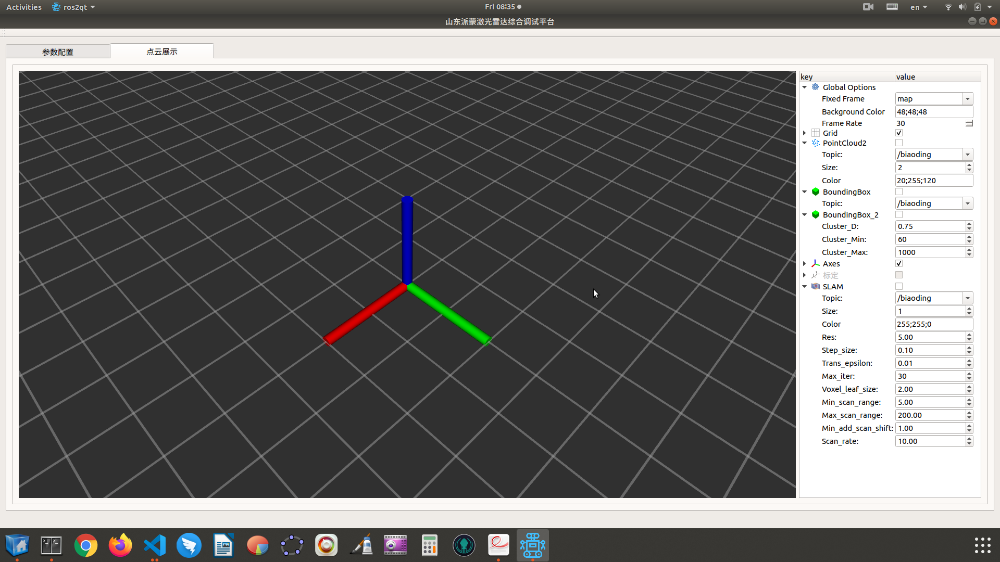
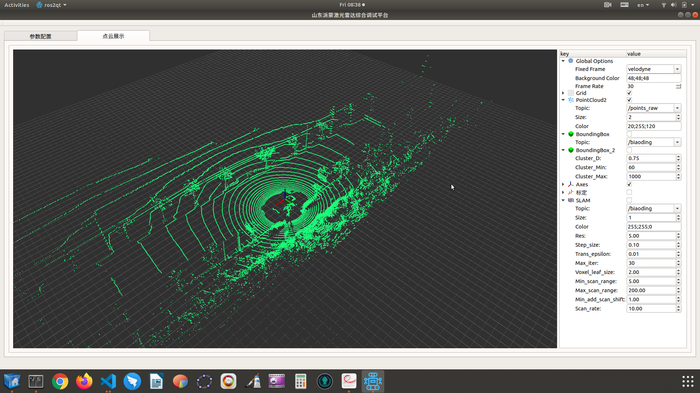
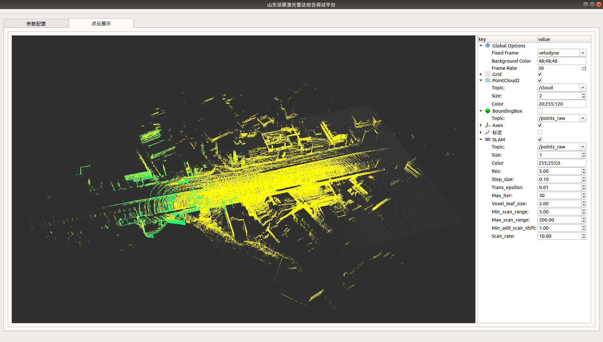
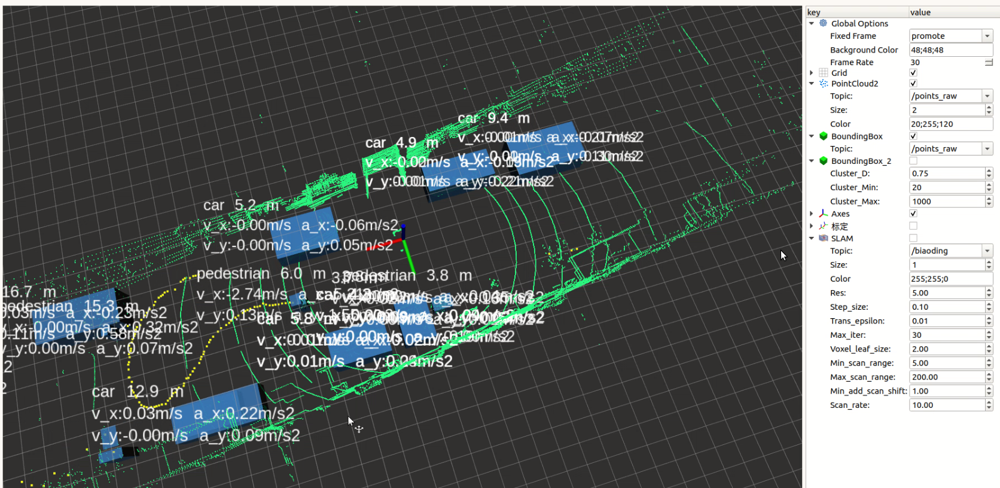
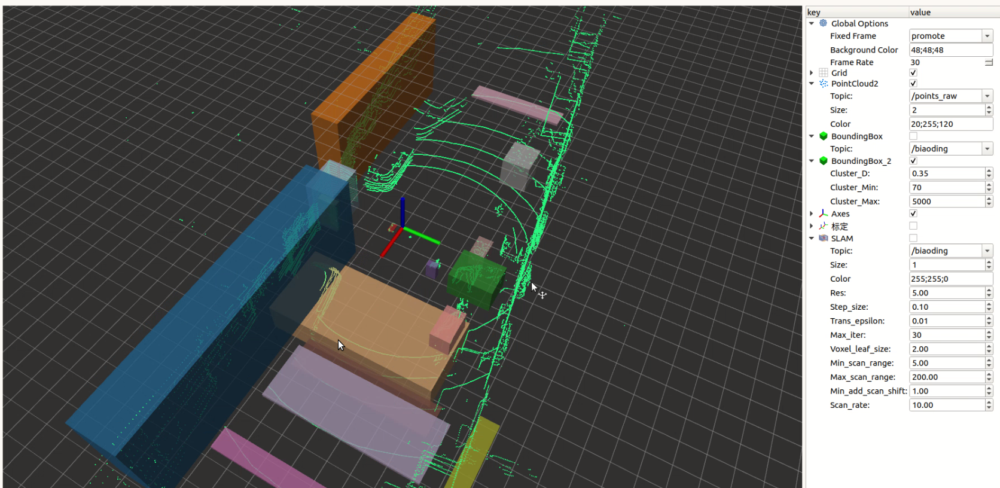
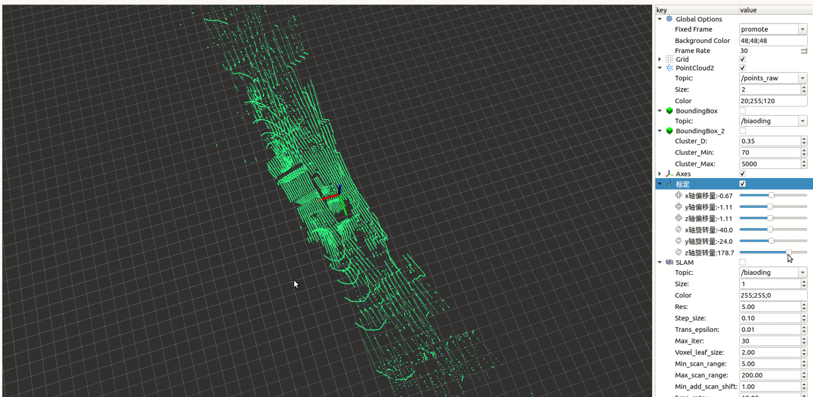

激光雷达算法盒子封装ｖ1.0
硬件环境组成
适用于AGX控制器
velodyne激光雷达，注：其他品牌雷达只需更换驱动和对应的点云topic
软件环境部署
ubuntu18.04操作系统
根据AGX提供的系统包Jetpack安装
Cuda和cudnn安装
通过Jetpack安装
ROS安装
- 下载
- git clone https://github.com/jetsonhacks/installROSXavier.git
- 切换目录
- cd installROSXavier
- 安装
- ./installROS.sh -p ros-melodic-desktop -p ros-melodic-rgbd-launch
- 插件安装
- sudo apt-get install ros-melodic-jsk-rviz-plugins
caffe 部署
- 下载
- git clone https://github.com/BVLC/caffe.git
- 安装依赖
- sudo apt-get install libprotobuf-dev libleveldb-dev libsnappy-dev libopencv-dev libhdf5-serial-dev protobuf-compiler
- sudo apt-get install --no-install-recommends libboost-all-dev
- sudo apt-get install libopenblas-dev
- sudo apt-get install libgflags-dev libgoogle-glog-dev liblmdb-dev
- 切换目录
- cd caffe
- 新建Makefile.config文件,并粘贴下面的内容
-
``` ａ## Refer to http://caffe.berkeleyvision.org/installation.html # Contributions simplifying and improving our build system are welcome!
cuDNN acceleration switch (uncomment to build with cuDNN).
USE_CUDNN := 1
CPU-only switch (uncomment to build without GPU support).
CPU_ONLY := 1
uncomment to disable IO dependencies and corresponding data layers
USE_OPENCV := 0
USE_LEVELDB := 0
USE_LMDB := 0
uncomment to allow MDB_NOLOCK when reading LMDB files (only if necessary)
You should not set this flag if you will be reading LMDBs with any
possibility of simultaneous read and write
ALLOW_LMDB_NOLOCK := 1
Uncomment if you're using OpenCV 3
OPENCV_VERSION := 3
To customize your choice of compiler, uncomment and set the following.
N.B. the default for Linux is g++ and the default for OSX is clang++
CUSTOM_CXX := g++
CUDA directory contains bin/ and lib/ directories that we need.
CUDA_DIR := /usr/local/cuda
On Ubuntu 14.04, if cuda tools are installed via
"sudo apt-get install nvidia-cuda-toolkit" then use this instead:
CUDA_DIR := /usr
CUDA architecture setting: going with all of them.
For CUDA < 6.0, comment the lines after *_35 for compatibility.
CUDA_ARCH := -gencode arch=compute_30,code=sm_30 \ -gencode arch=compute_35,code=sm_35 \ -gencode arch=compute_50,code=sm_50 \ -gencode arch=compute_52,code=sm_52 \ -gencode arch=compute_61,code=sm_61 \ -gencode arch=compute_61,code=compute_61
# -gencode arch=compute_20,code=sm_20 \ # -gencode arch=compute_20,code=sm_21 \BLAS choice:
atlas for ATLAS (default)
mkl for MKL
open for OpenBlas
BLAS := atlas
BLAS := open
Custom (MKL/ATLAS/OpenBLAS) include and lib directories.
Leave commented to accept the defaults for your choice of BLAS
(which should work)!
BLAS_INCLUDE := /path/to/your/blas
BLAS_LIB := /path/to/your/blas
Homebrew puts openblas in a directory that is not on the standard search path
BLAS_INCLUDE := $(shell brew --prefix openblas)/include
BLAS_LIB := $(shell brew --prefix openblas)/lib
This is required only if you will compile the matlab interface.
MATLAB directory should contain the mex binary in /bin.
MATLAB_DIR := /usr/local
MATLAB_DIR := /Applications/MATLAB_R2012b.app
NOTE: this is required only if you will compile the python interface.
We need to be able to find Python.h and numpy/arrayobject.h.
PYTHON_INCLUDE := /usr/include/python2.7 \ /usr/lib/python2.7/dist-packages/numpy/core/include
Anaconda Python distribution is quite popular. Include path:
Verify anaconda location, sometimes it's in root.
ANACONDA_HOME := $(HOME)/anaconda2
# PYTHON_INCLUDE := $(ANACONDA_HOME)/include \ $(ANACONDA_HOME)/include/python2.7 \ $(ANACONDA_HOME)/lib/python2.7/site-packages/numpy/core/include \
Uncomment to use Python 3 (default is Python 2)
PYTHON_LIBRARIES := boost_python3 python3.5m
# PYTHON_INCLUDE := /usr/include/python3.5m \
/usr/lib/python3.5/dist-packages/numpy/core/include
We need to be able to find libpythonX.X.so or .dylib.
PYTHON_LIB := /usr/lib
PYTHON_LIB := $(ANACONDA_HOME)/lib
Homebrew installs numpy in a non standard path (keg only)
PYTHON_INCLUDE += $(dir $(shell python -c 'import numpy.core; print(numpy.core.file)'))/include
PYTHON_LIB += $(shell brew --prefix numpy)/lib
Uncomment to support layers written in Python (will link against Python libs)
WITH_PYTHON_LAYER := 1
Whatever else you find you need goes here.
INCLUDE_DIRS := $(PYTHON_INCLUDE) /usr/local/include /usr/include/hdf5/serial/ LIBRARY_DIRS := $(PYTHON_LIB) /usr/local/lib /usr/lib /usr/lib/aarch64-linux-gnu/hdf5/serial
If Homebrew is installed at a non standard location (for example your home directory) and you use it for general dependencies
INCLUDE_DIRS += $(shell brew --prefix)/include
LIBRARY_DIRS += $(shell brew --prefix)/lib
Uncomment to use
pkg-configto specify OpenCV library paths.(Usually not necessary -- OpenCV libraries are normally installed in one of the above $LIBRARY_DIRS.)
USE_PKG_CONFIG := 1
N.B. both build and distribute dirs are cleared on
make cleanBUILD_DIR := build DISTRIBUTE_DIR := distribute
Uncomment for debugging. Does not work on OSX due to https://github.com/BVLC/caffe/issues/171
DEBUG := 1
The ID of the GPU that 'make runtest' will use to run unit tests.
TEST_GPUID := 0
enable pretty build (comment to see full commands)
Q ?= @ ``` * 编译 * make -j 8 * sudo make distribute
qt安装
- sudo apt-get install qttools5-dev-tools libqt5svg5-dev qtmultimedia5-dev
算法盒子组成部分
- 点云标定功能
- 点云建图功能
- 点云聚类功能
- 点云智能识别功能
程序文件夹目录结构
- 程序
- catkin_ws
- src
- common
- detected_objects_visualizer
- lidar_cnn_seg_detect
- lidar_demo
- ndt_mapping
- rockauto_msgs
- ros2qt
- velodyne
- CMakeLists.txt
我们需要把catkin_ws文件夹拷贝到工控机的home目录下。
编译程序
- 切换目录
- cd catkin_ws
- 编译
- catkin_make
- source 环境
- source devel/setup.bash
程序启动
- rosrun ros2qt ros2qt
应用讲解
- 程序启动后弹出下图界面

- 如下图配置
Fixed Frame为velodyne,勾选pointCloud2复选框，设置其Topic为point_raw可观看雷达数据

- 启用ＳＬＡＭ功能，则勾选
SLAM复选框,将其Topic设置为point_raw，同时将pointCloud2的Topic设置为cloud。

- Slam提供了可调参数： Topic:设置构图主题 Size:设置点云地图中点的显示大小 Color:点云地图的颜色 Res:分辨率 Step_size:步幅 Trans_epsilon:收敛均方差 Max_iter:最大迭代次数 Voxel_leaf_size:Voxel尺寸 Min_scan_range:最小扫描范围 Max_scan_range:最大扫描范围 Scan_rate:扫描周期

- 显示障碍物，则取消
SLAM勾选，将pointCloud2的Topic更改回point_raw.勾选ＢoundingBox复选框。

显示位置，速度，加速度和路径 显示聚类障碍物，则勾选'BoundingBox2'复选框。

这里有3个参数: Cluster_D:聚类直径 Cluster_Min:最小聚类点数 Cluster_Max:最大聚类点数
- 点云标定
首先要勾选
PointCloud2显示点云，再勾选标定可移动xyz三轴，也可绕三轴旋转。

程序讲解
点云标定功能
标定程序功能代码段位于"ros2qt\src\qnode.cpp"文件
void QNode::biaodingCallback(const PointCloud::ConstPtr& msg)
{
//点云旋转
Eigen::Affine3f transform_2 = Eigen::Affine3f::Identity();
transform_2.translation() << x_pianyi, y_pianyi, z_pianyi;
float theta_2 = 0*M_PI/180;
transform_2.rotate (Eigen::AngleAxisf (theta_2, Eigen::Vector3f::UnitY()));
pcl::PointCloud<pcl::PointXYZ>::Ptr transformed_cloud_2 (new pcl::PointCloud<pcl::PointXYZ> ());
pcl::transformPointCloud (*msg, *transformed_cloud_2, transform_2);
Eigen::Affine3f transform = Eigen::Affine3f::Identity();
transform.translation() << 0.0, 0.0, 0.0;
float theta = x_xuanzhuan*M_PI/180;
transform.rotate (Eigen::AngleAxisf (theta, Eigen::Vector3f::UnitX()));
pcl::PointCloud<pcl::PointXYZ>::Ptr transformed_cloud (new pcl::PointCloud<pcl::PointXYZ> ());
pcl::transformPointCloud (*transformed_cloud_2, *transformed_cloud, transform);
Eigen::Affine3f transform_3 = Eigen::Affine3f::Identity();
transform_3.translation() << 0.0, 0.0, 0.0;
float theta_3 = z_xuanzhuan*M_PI/180;
transform_3.rotate (Eigen::AngleAxisf (theta_3, Eigen::Vector3f::UnitZ()));
pcl::PointCloud<pcl::PointXYZ>::Ptr transformed_cloud_3 (new pcl::PointCloud<pcl::PointXYZ> ());
pcl::transformPointCloud (*transformed_cloud, *transformed_cloud_3, transform_3);
Eigen::Affine3f transform_4 = Eigen::Affine3f::Identity();
transform_4.translation() << 0.0, 0.0, 0.0;
float theta_4 = y_xuanzhuan*M_PI/180;
transform_4.rotate (Eigen::AngleAxisf (theta_4, Eigen::Vector3f::UnitY()));
pcl::PointCloud<pcl::PointXYZ>::Ptr transformed_cloud_4 (new pcl::PointCloud<pcl::PointXYZ> ());
pcl::transformPointCloud (*transformed_cloud_3, *transformed_cloud_4, transform_4);
transformed_cloud_4->header.frame_id = frame_id;
pub.publish(transformed_cloud_4);
}
点云的标定，主要是点云的旋转和平移功能，可以参考pcl，这里简单讲解一下旋转平移功能
- 首先定义一个Affine3f结构体，用来存储点云旋转和平移信息
Eigen::Affine3f transform_2 = Eigen::Affine3f::Identity();
- 再把ｘ，ｙ，ｚ轴的平移量x_pianyi, y_pianyi, z_pianyi传递进Affine3f结构体
transform_2.translation() << x_pianyi, y_pianyi, z_pianyi;
- 定义一个旋转角度
float theta_2 = 0*M_PI/180;
- 把绕Ｙ轴旋转角度，传入Affin3f结构体，旋转轴Eigen::Vector3f::UnitY()
transform_2.rotate (Eigen::AngleAxisf (theta_2, Eigen::Vector3f::UnitY()));
- 定义旋转后的点云
pcl::PointCloudpcl::pointxyz::Ptr transformed_cloud_2 (new pcl::PointCloudpcl::pointxyz ());
- 执行点云的平移和旋转，并把结果存入
transformed_cloud_2
pcl::transformPointCloud (*msg, *transformed_cloud_2, transform_2);
点云建图功能
建图程序包即ndt_mapping文件夹,重点运算逻辑在ndt_mapping.cpp文件内，这里解析一下
ndt_mapping::ndt_mapping()
{
transform_pub = nh_.advertise<sensor_msgs::PointCloud2> ("/cloud", 1, false);
points_sub_ = nh_.subscribe(slam_topic, 100000, &ndt_mapping::points_callback,this);
ndt_map_pub_ = nh_.advertise<sensor_msgs::PointCloud2>("/ndt_map", 1000);
current_pose_pub_ = nh_.advertise<geometry_msgs::PoseStamped>("/current_pose", 1000);
max_iter_ = max_iter_1;
ndt_res_ = ndt_res_1;
step_size_ = step_size_1;
trans_eps_ = trans_eps_1;
voxel_leaf_size_ = voxel_leaf_size_1;
scan_rate_ = scan_rate_1;
min_scan_range_ = min_scan_range_1;
max_scan_range_ = max_scan_range_1;
min_add_scan_shift_ = min_add_scan_shift_1;
initial_scan_loaded = 0;
min_add_scan_shift_ = 1.0;
_tf_x=0.0, _tf_y=0.0, _tf_z=0.0, _tf_roll=0.0, _tf_pitch=0.0, _tf_yaw=0.0;
Eigen::Translation3f tl_btol(_tf_x, _tf_y, _tf_z);
Eigen::AngleAxisf rot_x_btol(_tf_roll, Eigen::Vector3f::UnitX());
Eigen::AngleAxisf rot_y_btol(_tf_pitch, Eigen::Vector3f::UnitY());
Eigen::AngleAxisf rot_z_btol(_tf_yaw, Eigen::Vector3f::UnitZ());
tf_btol_ = (tl_btol * rot_z_btol * rot_y_btol * rot_x_btol).matrix();
tf_ltob_ = tf_btol_.inverse();
map_.header.frame_id = "velodyne";
current_pose_.x = current_pose_.y = current_pose_.z = 0.0;current_pose_.roll = current_pose_.pitch = current_pose_.yaw = 0.0;
previous_pose_.x = previous_pose_.y = previous_pose_.z = 0.0;previous_pose_.roll = previous_pose_.pitch = previous_pose_.yaw = 0.0;
voxel_grid_filter_.setLeafSize(voxel_leaf_size_, voxel_leaf_size_, voxel_leaf_size_);
ndt.setTransformationEpsilon(trans_eps_);
ndt.setStepSize(step_size_);
ndt.setResolution(ndt_res_);
ndt.setMaximumIterations(max_iter_);
is_first_map_ = true;
};
ndt_mapping::ndt_mapping()函数，主要进行了一些参数设定，和topic设定。
void ndt_mapping::points_callback(const sensor_msgs::PointCloud2::ConstPtr& input)
{
pcl::PointCloud<pcl::PointXYZI> tmp, scan;
pcl::PointCloud<pcl::PointXYZI>::Ptr filtered_scan_ptr(new pcl::PointCloud<pcl::PointXYZI>());
pcl::PointCloud<pcl::PointXYZI>::Ptr transformed_scan_ptr(new pcl::PointCloud<pcl::PointXYZI>());
tf::Quaternion q;
Eigen::Matrix4f t_localizer(Eigen::Matrix4f::Identity());
Eigen::Matrix4f t_base_link(Eigen::Matrix4f::Identity());
static tf::TransformBroadcaster br_;
tf::Transform transform;
pcl::fromROSMsg(*input, tmp);
double r;
Eigen::Vector3d point_pos;
pcl::PointXYZI p;
for (pcl::PointCloud<pcl::PointXYZI>::const_iterator item = tmp.begin(); item != tmp.end(); item++)
{
use_imu_ = false;
if(use_imu_){
// deskew(TODO:inplement of predicting pose by imu)
point_pos.x() = (double)item->x;
point_pos.y() = (double)item->y;
point_pos.z() = (double)item->z;
double s = scan_rate_ * (double(item->intensity) - int(item->intensity));
point_pos.x() -= s * current_pose_msg_.pose.position.x;//current_pose_imu_
point_pos.y() -= s * current_pose_msg_.pose.position.y;
point_pos.z() -= s * current_pose_msg_.pose.position.z;
Eigen::Quaterniond start_quat, end_quat, mid_quat;
mid_quat.setIdentity();
end_quat = Eigen::Quaterniond(
current_pose_msg_.pose.orientation.w,
current_pose_msg_.pose.orientation.x,
current_pose_msg_.pose.orientation.y,
current_pose_msg_.pose.orientation.z);
start_quat = mid_quat.slerp(s, end_quat);
point_pos = start_quat.conjugate() * start_quat * point_pos;
point_pos.x() += current_pose_msg_.pose.position.x;
point_pos.y() += current_pose_msg_.pose.position.y;
point_pos.z() += current_pose_msg_.pose.position.z;
p.x = point_pos.x();
p.y = point_pos.y();
p.z = point_pos.z();
}
else{
p.x = (double)item->x;
p.y = (double)item->y;
p.z = (double)item->z;
}
p.intensity = (double)item->intensity;
r = sqrt(pow(p.x, 2.0) + pow(p.y, 2.0));
if (min_scan_range_ < r && r < max_scan_range_)
{
scan.push_back(p);
}
}
pcl::PointCloud<pcl::PointXYZI>::Ptr scan_ptr(new pcl::PointCloud<pcl::PointXYZI>(scan));
if (initial_scan_loaded == 0)
{
pcl::transformPointCloud(*scan_ptr, *transformed_scan_ptr, tf_btol_);
map_ += *transformed_scan_ptr;
initial_scan_loaded = 1;
}
voxel_grid_filter_.setInputCloud(scan_ptr);
voxel_grid_filter_.filter(*filtered_scan_ptr);
ndt.setInputSource(filtered_scan_ptr);
pcl::PointCloud<pcl::PointXYZI>::Ptr map_ptr(new pcl::PointCloud<pcl::PointXYZI>(map_));
if (is_first_map_ == true){
ndt.setInputTarget(map_ptr);
is_first_map_ = false;
}
Eigen::Translation3f init_translation(current_pose_.x, current_pose_.y, current_pose_.z);
Eigen::AngleAxisf init_rotation_x(current_pose_.roll, Eigen::Vector3f::UnitX());
Eigen::AngleAxisf init_rotation_y(current_pose_.pitch, Eigen::Vector3f::UnitY());
Eigen::AngleAxisf init_rotation_z(current_pose_.yaw, Eigen::Vector3f::UnitZ());
Eigen::Matrix4f init_guess =
(init_translation * init_rotation_z * init_rotation_y * init_rotation_x).matrix() * tf_btol_;
pcl::PointCloud<pcl::PointXYZI>::Ptr output_cloud(new pcl::PointCloud<pcl::PointXYZI>);
ndt.align(*output_cloud, init_guess);
t_localizer = ndt.getFinalTransformation();
t_base_link = t_localizer * tf_ltob_;
pcl::transformPointCloud(*scan_ptr, *transformed_scan_ptr, t_localizer);
sensor_msgs::PointCloud2::Ptr tt(new sensor_msgs::PointCloud2);
pcl::toROSMsg(*transformed_scan_ptr, *tt);
tt->header.frame_id = "velodyne";
transform_pub.publish(tt);
tf::Matrix3x3 mat_b;
mat_b.setValue(static_cast<double>(t_base_link(0, 0)), static_cast<double>(t_base_link(0, 1)),
static_cast<double>(t_base_link(0, 2)), static_cast<double>(t_base_link(1, 0)),
static_cast<double>(t_base_link(1, 1)), static_cast<double>(t_base_link(1, 2)),
static_cast<double>(t_base_link(2, 0)), static_cast<double>(t_base_link(2, 1)),
static_cast<double>(t_base_link(2, 2)));
current_pose_.x = t_base_link(0, 3);current_pose_.y = t_base_link(1, 3);current_pose_.z = t_base_link(2, 3);
mat_b.getRPY(current_pose_.roll, current_pose_.pitch, current_pose_.yaw, 1);
transform.setOrigin(tf::Vector3(current_pose_.x, current_pose_.y, current_pose_.z));
q.setRPY(current_pose_.roll, current_pose_.pitch, current_pose_.yaw);
transform.setRotation(q);
br_.sendTransform(tf::StampedTransform(transform, input->header.stamp, "velodyne", "base_link"));
double shift = sqrt(pow(current_pose_.x - previous_pose_.x, 2.0) + pow(current_pose_.y - previous_pose_.y, 2.0));
if (shift >= min_add_scan_shift_)
{
map_ += *transformed_scan_ptr;
previous_pose_.x = current_pose_.x;previous_pose_.y = current_pose_.y;previous_pose_.z = current_pose_.z;
previous_pose_.roll = current_pose_.roll;previous_pose_.pitch = current_pose_.pitch;previous_pose_.yaw = current_pose_.yaw;
ndt.setInputTarget(map_ptr);
sensor_msgs::PointCloud2::Ptr map_msg_ptr(new sensor_msgs::PointCloud2);
pcl::toROSMsg(*map_ptr, *map_msg_ptr);
ndt_map_pub_.publish(*map_msg_ptr);
}
current_pose_msg_.header.frame_id = "velodyne";
current_pose_msg_.header.stamp = input->header.stamp;
current_pose_msg_.pose.position.x = current_pose_.x;current_pose_msg_.pose.position.y = current_pose_.y;current_pose_msg_.pose.position.z = current_pose_.z;
current_pose_msg_.pose.orientation.x = q.x();current_pose_msg_.pose.orientation.y = q.y();current_pose_msg_.pose.orientation.z = q.z();current_pose_msg_.pose.orientation.w = q.w();
current_pose_pub_.publish(current_pose_msg_);
std::cout << "-----------------------------------------------------------------" << std::endl;
std::cout << "构建地图" << std::endl;
std::cout << "-----------------------------------------------------------------" << std::endl;
}
ndt_mapping::points_callback函数即进行构图，将初始化点云加入至地图，若点云地图没有初始化载入，则将第一帧图像作为初始图像，然后将配准之后的图像逐帧加入map。通过tf_btol变换矩阵将原始点云进行转化。tf_btol是车辆在起始位置是不在全局地图原点时的变换矩阵。然后对原始输入点云进行体素过滤，选择不同的方法进行参数设置
init_guess是ndt配准时候的初始位置，该位置一般由前一帧位置加上微小时间段内的变化，当采用imu或odom时可以利用其进行辅助精确定位初始位置。如果未使用imu以及odom则使用原来的init_guess
点云聚类功能
点云聚类功能在"lidar_demo/src/lidar_demo.cpp"文件
void callback(const boost::shared_ptr<const sensor_msgs::PointCloud2>& msg)
{
ros::NodeHandle n;
n.getParam("Cluster_D", Cluster_D);
n.getParam("Cluster_Max", Cluster_Max);
n.getParam("Cluster_Min", Cluster_Min);
pcl::PCLPointCloud2 pcl_pc2;
pcl_conversions::toPCL(*msg,pcl_pc2);
pcl::PointCloud<pcl::PointXYZ>::Ptr temp_cloud(new pcl::PointCloud<pcl::PointXYZ>);
pcl::fromPCLPointCloud2(pcl_pc2,*temp_cloud);
std::vector<int> mapping;
pcl::removeNaNFromPointCloud(*temp_cloud, *temp_cloud, mapping);
pub2.publish(temp_cloud);
pcl::PointIndices::Ptr inliers (new pcl::PointIndices);
pcl::ModelCoefficients::Ptr coefficients (new pcl::ModelCoefficients);
pcl::PointCloud<pcl::PointXYZ>::Ptr cloud_plane (new pcl::PointCloud<pcl::PointXYZ> ());
pcl::PointCloud<pcl::PointXYZ>::Ptr cloud_f (new pcl::PointCloud<pcl::PointXYZ>);
if (temp_cloud->points.size() == 0)
{
std::cout << "cloud in ROI is empty" << std::endl;
return;
}
pcl::search::KdTree<pcl::PointXYZ>::Ptr tree (new pcl::search::KdTree<pcl::PointXYZ>);
tree->setInputCloud (temp_cloud);
std::vector<pcl::PointIndices> cluster_indices;
pcl::EuclideanClusterExtraction<pcl::PointXYZ> ec;
cout << Cluster_D << ":" << Cluster_Min << ":" << Cluster_Max<<endl;
ec.setClusterTolerance (Cluster_D);
ec.setMinClusterSize (Cluster_Min);
ec.setMaxClusterSize (Cluster_Max);
ec.setSearchMethod (tree);
ec.setInputCloud (temp_cloud);
ec.extract (cluster_indices);
jsk_recognition_msgs::BoundingBoxArray BOXS;
int j = 0;
vector<Eigen::Vector3f> center;
for (std::vector<pcl::PointIndices>::const_iterator it = cluster_indices.begin (); it != cluster_indices.end (); ++it)
{
pcl::PointCloud<pcl::PointXYZ>::Ptr cloud_cluster (new pcl::PointCloud<pcl::PointXYZ>);
for (std::vector<int>::const_iterator pit = it->indices.begin (); pit != it->indices.end (); ++pit)
cloud_cluster->push_back ((*temp_cloud)[*pit]);
cloud_cluster->width = cloud_cluster->size ();
cloud_cluster->height = 1;
cloud_cluster->is_dense = true;
std::cout << "Cluster has : " << cloud_cluster->size () << " data points." << std::endl;
j++;
jsk_recognition_msgs::BoundingBox box2;
Eigen::Vector3f mass_center;
pcl::MomentOfInertiaEstimation<pcl::PointXYZ> feature_extractor;
feature_extractor.setInputCloud(cloud_cluster);
feature_extractor.compute();
pcl::PointXYZ min_point_OBB;
pcl::PointXYZ max_point_OBB;
pcl::PointXYZ position_OBB;
Eigen::Matrix3f rotational_matrix_OBB;
feature_extractor.getOBB(min_point_OBB, max_point_OBB, position_OBB, rotational_matrix_OBB);
Eigen::Quaternionf quat (rotational_matrix_OBB);
feature_extractor.getMassCenter (mass_center);
center.push_back(mass_center);
pcl::PointXYZ min;
pcl::PointXYZ max;
pcl::getMinMax3D(*cloud_cluster,min,max);
max.x = max.x;
box2.label = j+1;
box2.pose.position.x = (max.x + min.x) / 2;
box2.pose.position.y = (max.y + min.y) / 2;
box2.pose.position.z = (max.z + min.z) / 2;
box2.dimensions.x = (max.x - min.x);
box2.dimensions.y = (max.y - min.y);
box2.dimensions.z = (max.z - min.z);
box2.header.frame_id = frame_id;
BOXS.boxes.push_back(box2);
}
BOXS.header.frame_id = frame_id;
pub.publish(BOXS);
}
点云聚类主要使用pcl库聚类算法
pcl::EuclideanClusterExtractionpcl::pointxyz ec;
只需设定参数：
Cluster_D:聚类直径 Cluster_Min:最小聚类点数 Cluster_Max:最大聚类点数
点云智能识别功能
主要代码分布位于lidar_cnn_seg_detect，detected_objects_visualizer，common，rockauto_msgs文件夹内
点云智能识别功能，采用的是apolo的神经网络识别算法，可到该算法的维护平台进行深入研究，该算法与voxelnet网络相似，也可参考github
我们在智能识别的基础上添加了速度和加速度显示
VisualizeDetectedObjects::ObjectsToLabels(const rockauto_msgs::DetectedObjectArray &in_objects)
{
visualization_msgs::MarkerArray label_markers;
for (auto const &object: in_objects.objects)
{
if (IsObjectValid(object))
{
visualization_msgs::Marker label_marker;
label_marker.lifetime = ros::Duration(marker_display_duration_);
label_marker.header = in_objects.header;
label_marker.ns = ros_namespace_ + "/label_markers";
label_marker.action = visualization_msgs::Marker::ADD;
label_marker.type = visualization_msgs::Marker::TEXT_VIEW_FACING;
label_marker.scale.x = 1.5;
label_marker.scale.y = 1.5;
label_marker.scale.z = 1.5;
label_marker.color = label_color_;
label_marker.id = marker_id_++;
if(!object.label.empty() && object.label != "unknown")
label_marker.text = object.label + " "; //Object Class if available
float velocity_x = 0.0, velocity_y = 0.0, a_x =0.0, a_y = 0.0;
if(past_x.size() ==0)
{
velocity_x = 0.0;
velocity_y = 0.0;
}
else{
int before = 0;
float past_d =100.0;
for(int i=0;i<past_x.size();i++)
{
float d = sqrt(pow((past_x[i] - object.pose.position.x),2)+pow((past_y[i] - object.pose.position.y),2));
if(d < past_d)
{
past_d = d;
before = i;
}
}
velocity_x = (-past_x[before] + object.pose.position.x)/(0.1);
velocity_y = (-past_y[before] + object.pose.position.y)/(0.1);
a_x = (-past_vx[before] + velocity_x)/(0.1);
a_y = (-past_vy[before] + velocity_y)/(0.1);
}
std::stringstream distance_stream;
distance_stream << std::fixed << std::setprecision(1)
<< sqrt((object.pose.position.x * object.pose.position.x) +
(object.pose.position.y * object.pose.position.y));
std::stringstream velocity_stream;
velocity_stream <<std::fixed<<std::setprecision(2)<<"v_x:"<<velocity_x <<"m/s a_x:"<<a_x<<"m/s2\n" <<"v_y:"<<velocity_y<<"m/s a_y:"<<a_y<<"m/s2";
std::string distance_str = distance_stream.str() + " m\n" + velocity_stream.str();
label_marker.text += distance_str;
if (object.velocity_reliable)
{
double velocity = object.velocity.linear.x;
if (velocity < -0.1)
{
velocity *= -1;
}
if (abs(velocity) < object_speed_threshold_)
{
velocity = 0.0;
}
tf::Quaternion q(object.pose.orientation.x, object.pose.orientation.y,
object.pose.orientation.z, object.pose.orientation.w);
double roll, pitch, yaw;
tf::Matrix3x3(q).getRPY(roll, pitch, yaw);
// convert m/s to km/h
std::stringstream kmh_velocity_stream;
kmh_velocity_stream << std::fixed << std::setprecision(1) << (velocity * 3.6);
std::string text = "\n<" + std::to_string(object.id) + "> " + kmh_velocity_stream.str() + " km/h";
label_marker.text += text;
}
label_marker.pose.position.x = object.pose.position.x;
label_marker.pose.position.y = object.pose.position.y;
label_marker.pose.position.z = label_height_;
label_marker.scale.z = 1.0;
if (!label_marker.text.empty())
label_markers.markers.push_back(label_marker);
past_x.push_back(object.pose.position.x);
past_y.push_back(object.pose.position.y);
past_vx.push_back(velocity_x);
past_vy.push_back(velocity_y);
}
} // end in_objects.objects loop
return label_markers;
}//ObjectsToLabels
注意事项
- 程序要放在英文路径下，最好不要放在中文目录下，因为容易出现中文乱码问题而影响程序运行